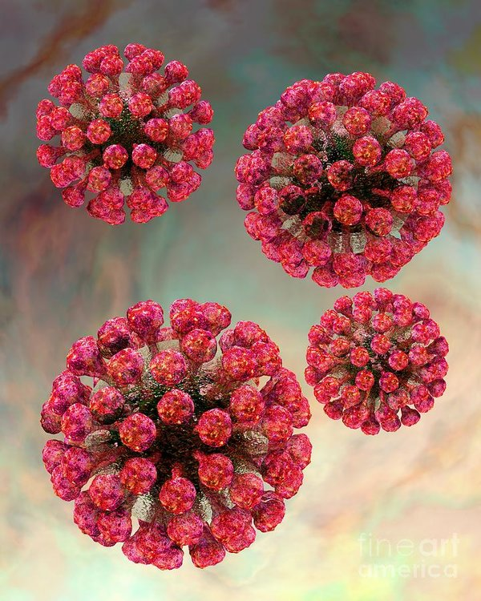

Having a virus is almost unbelievable to cope with. One with pain-sickening symptoms that it can ruin your day. Rubella, a virus microbe, has been found centuries in the making causing epidemic spreads. Its known virus is called German measles. Made up of single-stranded RNA, it can deal severe torture to the host.
Rubella has some unique characterisitics of its own such as a cell, but less complicated. It's size and structure are unique itself with its spherical shape made of glycoproteins, lipid bilayer proteins, and icosahedral that is in one capsid. Inside the capsid, there is a positive sense, single-stranded RNA. The typical virus is actually smaller than human cells with a 50-70 nm diameter. The shape of a typical rubivirus is a sphere, but the parts of are shaped with sphered and pentagons.
Rubella virus particles made by Russel Knightly at this page.CC-BY-NC-ND(all rights reserved)
Between a cell and a virus, there are many differences as well as similarities. The virus could be explained as what its made of compared to the host cell, or vice versa. How they both function, or how they change. How they live, or simply how they are portrayed. Here are a few that I could list:
Differences:
Similarities:
Rubella virus entering eukaryotic cell made by King Saud University group at this page. CC-0(Free use).